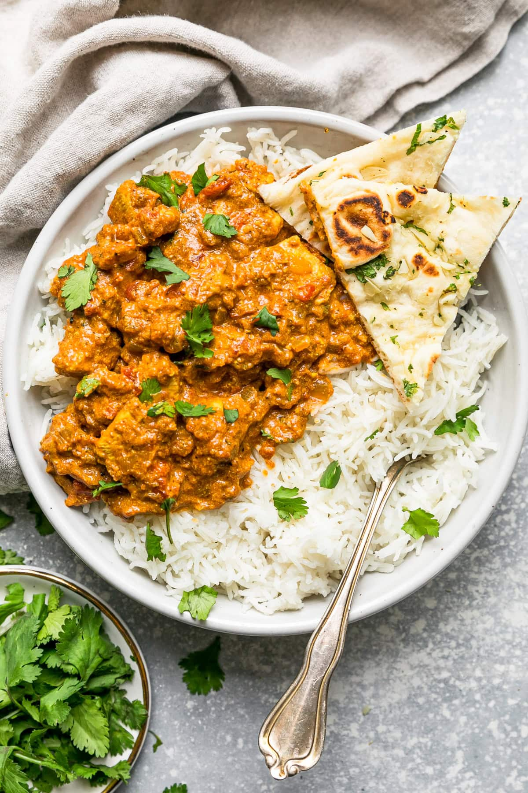
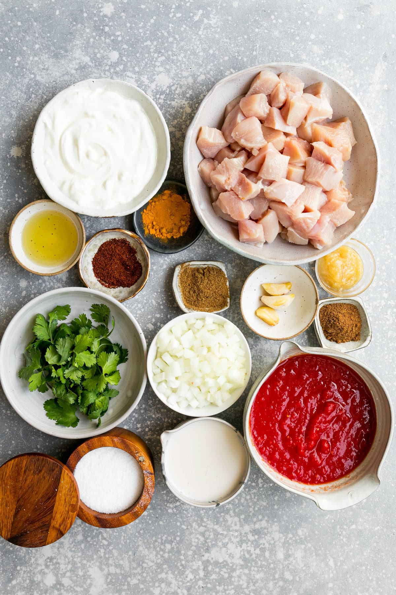
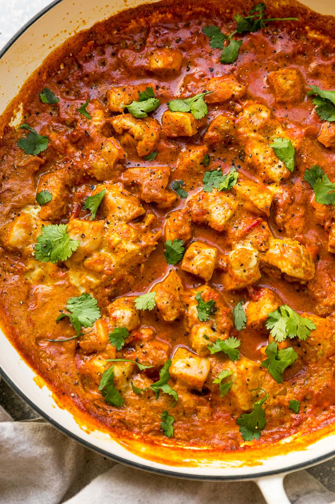

Chicken Tikka Masala

This easy Chicken Tikka Masala is made with tender chunks of boneless chicken breasts cooked in an aromatic, creamy yogurt-tomato sauce
Chicken Tikka Masala Calories
An average restaurant serving of Chicken Tikka Masala can range from 800 to 1200 calories. This version uses lighter ingrediens and 3/4 cups is around 250 Calories.
Ingredients

- Canola Oil or Butter
- Aromatics: Minced onion, grated ginger, and crushed garlic
- Canned Crushed Tomatoes
- Creamy Ingredients
- Spices: Cumin, garam masala, tumeric, chili powder, and kosher salt
- Chicken: Cut boneless skinless chicken breasts into bite sized pieces
- Cilantro
How to Make Chicken Tikka Masala
- Aromatics and Spices: In a large skillet, saute the onions, followed by the ginger and then garlic. Add the cumin, garam masala, tumeric, chili powder, and salt and cook for 2 minutes.
- Simmer Sauce: Pour the tomatoes and milk into the pan and simmer on low until the sauce thickens.
- Temper the Yogurt: To ensure the sauce doesn't curdle, mix the yogurt with a half cup of warm tomato sauce in a bowl. Stir and then add it to the pot.
- Chicken: Add the raw chicken and simmer until cooked through. Top with fresh cilantro before serving.

Source
Back to Home